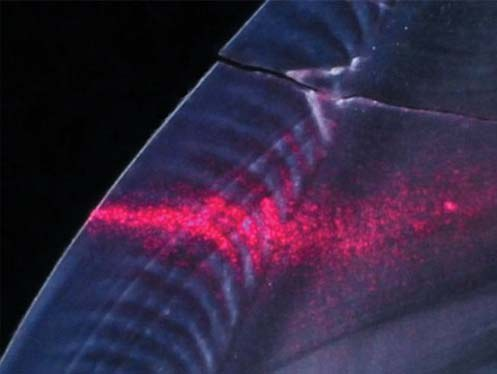
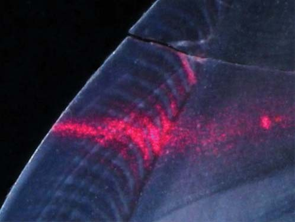
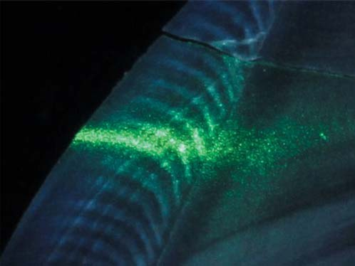
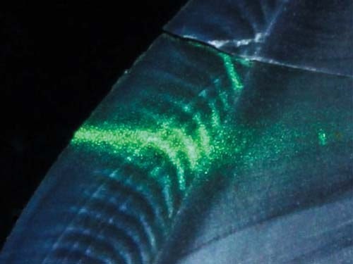
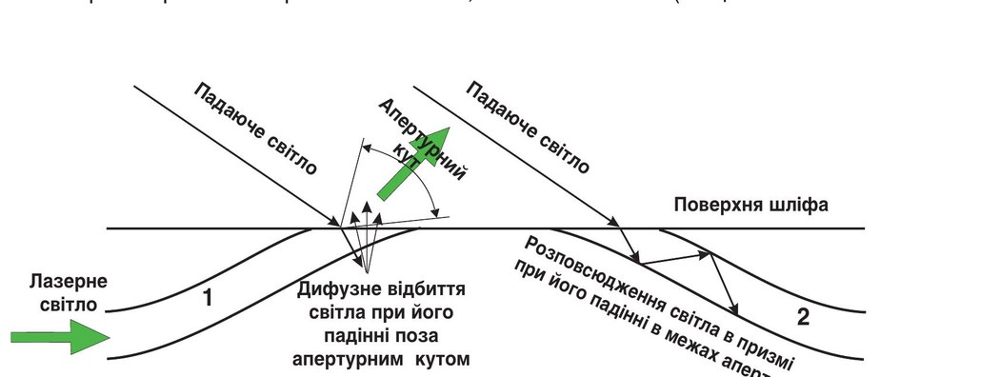
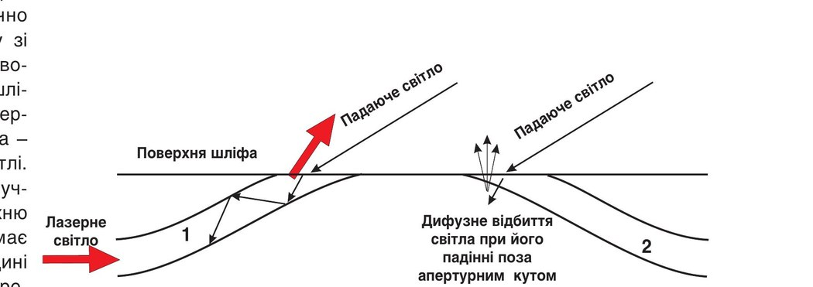
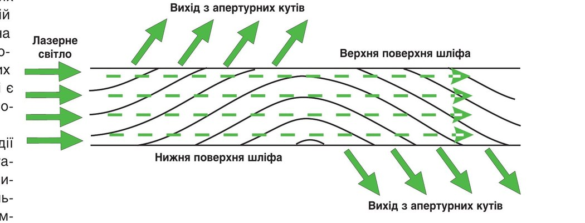
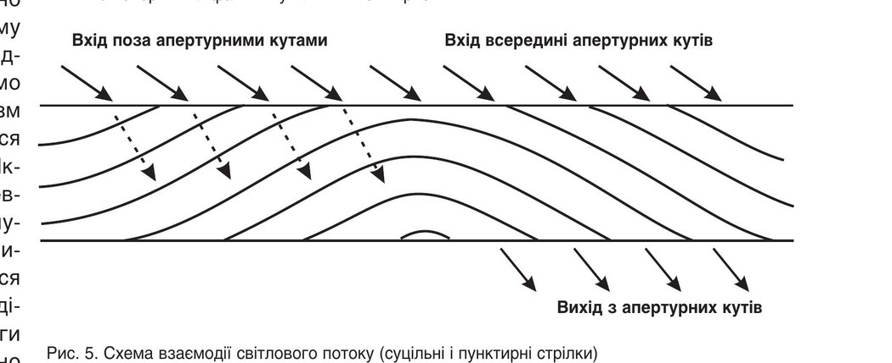
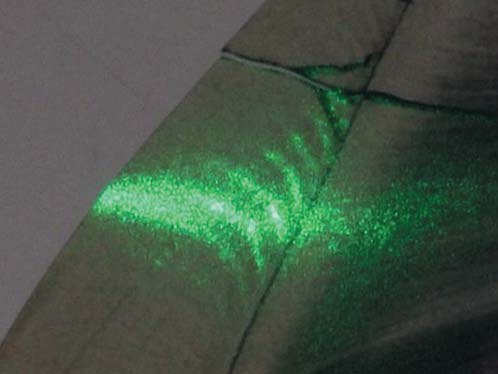
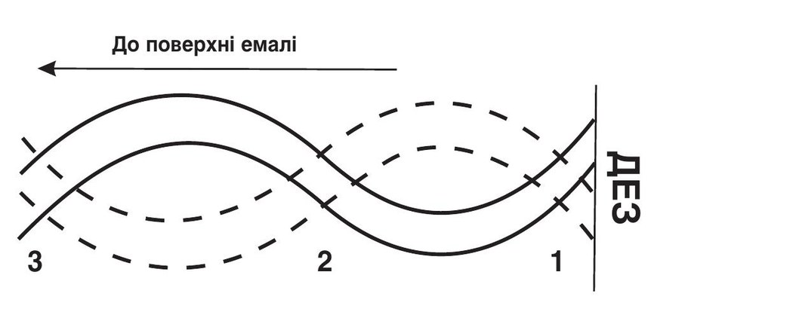

Наука · журнал «ДентАрт» 2018 №2
Смуги Гунтера – Шрегера: архітектоніка емалі і закон збереження енергії
HUNTER – SCHREGER BANDS: ARCHITECTONICS OF ENAMEL AND ENERGY CONSERVATION LAW
Володимир Грісімов,науковий відділ сучасних стоматологічних технологій НДІ стоматології та щелепно-лицевої хірургії
Вступ
Відомо, що оптичні ефекти у вигляді смуг Гунтера – Шрегера і ліній Ретціуса, які виявляються на шліфах інтактних зубів, пов'язані з будовою емалі. Лінії Ретціуса складаються з поперечної прокресленості емалевих призм. Остання зумовлена чергуванням ділянок з різним ступенем мінералізації, яка утворюється в процесі гістогенезу емалі. Ділянки зі зниженою мінералізацією мають більшу оптичну неоднорідність, а отже більшу розсіювальну здатність. Тому вони мають вигляд світліших у відбитому світлі і темніших у прохідному світлі при падінні світла перпендикулярно площині шліфа. При цьому прийнято вважати, що інтактна емаль не поглинає світло видимого діапазону. Висловлюючись мовою фізики, у лініях Ретціуса дотримується закон збереження енергії: чим більше об'єкт відбиває світла, тим менше він його пропускає.
Тим часом світлі і темні смуги Гунтера – Шрегера (так звані паразони і діазони), видимі на поздовжніх шліфах у відбитому природному світлі, можуть бути не видні у прохідному світлі. Тому створюється враження, що за аналогічних умов спостереження закон збереження енергії щодо смуг Гунтера – Шрегера не діє. У науковій і навчальній літературі з морфології емалі давно визнано, що прояв смуг Гунтера – Шрегера у відбитому світлі на поздовжніх шліфах зубів зумовлений вигинами емалевих призм. Однак механізм наявності чи відсутності цього оптичного феномену з вичерпною аргументацією зазвичай не розглядається.
Мета цієї статті – показати механізм утворення смуг Гунтера – Шрегера на основі хвилевідної моделі поширення світла в емалевих призмах.
Матеріали і методи
Дослідження провадилося на премолярах верхньої щелепи. Із видалених зубів готувалися плоскопаралельні шліфи товщиною 120 мкм, які зберігалися в 4% формаліні за кімнатної температури. Площина шліфа відповідала вестибуло-оральному вертикальному перетину і проходила через середину коронки. Механічна обробка поверхонь шліфа абразивами (шліфування та полірування) виконувалася на твердій основі (скляна пластина), що запобігало утворенню якого-небудь мікрорельєфу на поверхнях.
Для дослідження використовувалася експериментальна установка, схематично зображена на рис. 1. Шліф зуба клали в скляну циліндричну кювету, заповнену водою. Пучок світла від лазерного напівпровідникового модуля падав на поверхню емалі, пройшовши через щілинну діафрагму. Використовувалися модулі з довжинами хвиль 532 nm (зелене світло) і 650 nm (червоне світло). Кювета і діафрагма на рис. 1 не показані. Під кюветою розміщувалася поворотна призма. Світло від джерела 7 або 8 падало на горизонтальну поверхню шліфа під кутом від 60° до 70°. При положенні фотоапарата 1 фотографували поверхню шліфа, обернену вгору. При положенні фотоапарата 2 за рахунок поворотної призми фотографували поверхню шліфа, обернену вниз. Обов'язковими умовами фотографування були паралельність горизонтального переміщення фотоапарата лазерному променю і трикутним граням призми. Для отримання зображень однакового розміру при зміні положення фотоапарата (1→2) його переміщували не лише в горизонтальній площині, а й по оптичній осі, наближаючи до горизонтальної поверхні призми і не змінюючи фокусування об'єктива.
![Схема експерименту: 1 – положення фотоапарата при фотографуванні поверхні шліфа, оберненої вгору; 2 – положення фотоапарата при фотографуванні поверхні шліфа, оберненої вниз; 3 – шліф коронкової частини зуба, перший премоляр верхньої щелепи, вестибуло-оральний перетин; 4 – лазерний промінь, спрямований на оральну (піднебінну) поверхню емалі, перебуває у площині шліфа; 5, 6 – грані призми, що відбивають світло, утворюють між собою кут 90°; 7 – джерело світла для спостереження шліфа у відбитому світлі при косому падінні світла з боку піднебінної поверхні емалі; 8 – джерело світла для спостереження шліфа у відбитому світлі при косому падінні світла з боку вестибулярної поверхні емалі.](images/gris-001.jpg)
Робилося фотографування шліфа у таких ситуаціях:
- при падінні лазерного пучка на піднебінну поверхню емалі і одночасному підсвічуванні від джерела 7 при положенні фотоапарата 1;
- при падінні лазерного пучка на піднебінну поверхню емалі і одночасному підсвічуванні від джерела 7 при положенні фотоапарата 2;
- при падінні лазерного пучка на піднебінну поверхню емалі і одночасному підсвічуванні від джерела 8 при положенні фотоапарата 1;
- при падінні лазерного пучка на піднебінну поверхню емалі і одночасному підсвічуванні від джерела 8 при положенні фотоапарата 2.
Для порівняльного аналізу зображень верхньої і нижньої поверхонь шліфа в зоні входження лазерного пучка використовувався графічний редактор Paint Shop Pro X6. За допомогою команди «Переверніть по горизонталі» зі справжнього зображення нижньої поверхні отримували її дзеркальне зображення. Потім зі справжнього зображення верхньої поверхні і дзеркального зображення нижньої поверхні виділялася одна і та ж ділянка. Для виділення ідентичних ділянок їх координати «прив'язувалися» до реперних точок, в ролі яких було зручно використовувати, наприклад, тріщини шліфа.
Результати та обговорення
Результати подано на фото 1-4. На світлинах видно, що при підсвічуванні шліфа променем лазера картина бічного розсіювання лазерного світла у внутрішній половині шару емалі відповідає рисунку смуг Гунтера – Шрегера. При косому падінні світла на поверхню площини шліфа з боку піднебінної поверхні емалі картина бічного розсіювання лазерного світла своїми максимумами збігається зі світлими смугами, які зумовлені світлом джерела 7 (фото 1, 2). При косому падінні світла на поверхню площини шліфа від вестибулярної поверхні емалі (джерело 8) картина бічного розсіювання лазерного світла своїми максимумами співпадає з темними смугами (фото 3, 4).




Оптичні ефекти, подані на фото 1 і фото 3 (справжнє зображення), пояснюються хвилевідною моделлю поширення світла в емалевих призмах, про яку повідомлялося раніше. Коротко нагадаємо, в чому полягає механізм їх утворення.
Оскільки показник заломлення у призм більший, ніж у міжпризматичної речовини (відповідно 1,62 і 1,57), світло може поширюватися всередині призми, зазнаючи повного внутрішнього відбиття на її межах, як це відбувається всередині оптичного хвилевода (світловода). За відповідності площини шліфа меридіональному перетину вигини призм симетрично відхиляються щодо його площини. При цьому торці призм, що перетинаються площиною шліфа, повинні бути спрямовані до поверхні емалі під кутами 20° у двох протилежних напрямках. Якщо світло, що падає під кутом на поверхню шліфа, потрапляє на торець призми (2), повернутий до джерела 7 (рис. 2), то воно входить в емаль в межах апертурного кута призми (світловода) і поширюється всередині неї. У таких зонах поверхні емалі утворюються темні смуги. Якщо те саме світло падає на торець призми (1), звернутий від джерела (рис. 2), то воно входить у призму поза апертурним кутом і після заломлення на поверхні шліфа потрапляє на її внутрішню поверхню під кутом, меншим, ніж граничний кут повного внутрішнього відбиття. У цьому випадку світло має вийти в сусідню призму, що призведе до збільшення дифузно відбитого світлового потоку, утвореного бічними поверхнями в пучку сусідніх призм, і до утворення світлої смуги. При протилежному напрямку світла, що косо падає на поверхню шліфа (джерело 8), пучки призм будуть мінятися ролями, «працюючи» точно так само (рис. 3). Тому зі зміною напрямку світлового потоку на поверхню шліфа відбуватиметься інверсія світлоти смуг Гунтера – Шрегера у відбитому світлі.


При падінні лазерного пучка на зовнішню поверхню емалі світло лазера має входити в призму всередині її апертурного кута і переважно поширюватися всередині призми, як по світловоду. У місці виходу торця призми на поверхню виходить і світло від лазера, і тоді максимуми бічного розсіювання лазерного світла повинні збігатися зі світлими (фото 1) або темними (фото 3) смугами в залежності від напрямку світла, що косо падає на поверхню шліфа.
Новими цікавими фактами є два феномени.
- На нижніх поверхнях шліфів (фото 2 і 4) мають місце аналогічні збіги максимумів бічного розсіювання лазерного випромінювання зі світлими або темними смугами, викликаними джерелами 7 або 8.
- Порівняння першої пари світлин (фото 1 і 2) засвідчує повне неспівпадіння проекції розподілу світлих і темних смуг як від лазера, так і від джерела 7. Проекціям світлих смуг верхньої поверхні шліфа відповідають темні смуги нижньої поверхні шліфа. Аналогічна ситуація у другої пари світлин (фото 3 і 4): повне неспівпадіння проекції розподілу світлих і темних смуг як від лазера, так і від джерела 8.
Походження цих феноменів можна пояснити таким чином. З огляду на те, що світло не тільки поширюється уздовж емалевих призм, але й перетинає їх межі, значна частина (якщо не основна) лазерного світла проходить через емаль від її поверхні до дентину у відповідності з напрямком падаючого пучка (пунктирні стрілки на рис. 4). У відповідності з моделлю, описаною вище (рис. 2), світло має виходити зі шліфа, долаючи його поверхню через апертурні кути призм. Якщо апертурні кути відкриваються вгору, то світло виходить угору, якщо апертурні кути відкриваються вниз, то світло виходить униз. При цьому, якщо враховувати товщину шліфа (120 мкм), кількість призм у пучку та їхній поперечний розмір, то проекції апертурних кутів, що відкриваються вгору, не повинні збігатися з тими, що відкриваються вниз (рис. 4).

При косому падінні світла на поверхню шліфа поза апертурними кутами емалевих призм після його заломлення на поверхні шліфа воно проходить всередину, зазнаючи багаторазового френелівського відбиття на кожній межі «тіло призми – міжпризматична речовина». Такий світловий потік на виході через нижню поверхню шліфа повинен бути ослаблений. Якщо світло падає всередині апертурних кутів, світловий потік проходить уздовж емалевих призм, не зазнаючи згаданого вище френелівского відбиття. Тому він менше ослаблений і з більшою інтенсивністю виходить через апертурні кути нижньої поверхні. У результаті в проекціях світлих смуг на верхній поверхні є темні смуги на нижній поверхні і, відповідно, у проекціях темних смуг на верхній поверхні є світлі смуги на нижній поверхні (рис. 5).

Виходячи із взаємодії світла з апертурними кутами призм, можна пояснити, чому у значній більшості публікацій повідомляється про те, що смуги Гунтера – Шрегера видно у відбитому природному світлі і не видно у прохідному. При цьому будемо вважати, що вигини призм симетрично відхиляються щодо площини шліфа. Якщо світло падає під певним кутом у тій же азимутальній площині, в якій синусоїдально згинаються призми досліджуваної ділянки емалі, смуги Гунтера – Шрегера видно через різну орієнтацію апертурних кутів щодо падаючого світла. Якщо світло падає під певним кутом у площині, перпендикулярній до площини вигинів призм, або по нормалі до площини шліфа (кут падіння 0°), смуги не помітні через однакове спрямування падаючого світла щодо всіх апертурних кутів. У прохідному світлі смуги не помітні з тієї самої причини, оскільки світловий потік через нормальне падіння також однаково орієнтований щодо апертурних кутів емалевих призм (фото 5).

На основі хвилевідної моделі можна пояснити серповидну форму смуг Гунтера – Шрегера. Імовірно, це пов'язано зі зміщенням точок перехрещення пучків емалевих призм щодо дентино-емалевого з'єднання (ДЕЗ) як у напрямку «ДЕЗ – поверхня емалі», так і в напрямку «вершина горба (ріжучий край) – шийка зуба».
У літературі з морфології емалі, починаючи з 30-х років XIX століття і донині, є численні джерела із зазначенням перехрещення сусідніх пучків емалевих призм за рахунок різноспрямованості вигинів. Зацікавлений читач може знайти ці джерела за допомогою інтернету. Узагальнюючи дані морфологів, можна сказати, що коли розташування вигинів призм одного пучка нагадує графік тригонометричної функції типу y = sin x, то прилеглий до нього пучок з боку шийки зуба або вершини горбика нагадує графік функції y = -sin x (рис. 6). Висловлюючись математичною мовою, різниця фаз цих функцій становить π. Якщо припустити, що кожна точка перехрещення сусідніх пучків призм поступово зміщується в напрямку від дентино-емалевого з'єднання до поверхні емалі в залежності від відстані між шийкою і вершиною горбика, то цілком можливе вибудовування апертурних кутів різноспрямованих вигинів емалевих призм у смуги (зони), що мають серпоподібну форму.

Слід зазначити, що лінії Ретціуса в умовах описаного вище експерименту проявляються своєю підвищеною світлотою в будь-якій точці емалі, що підтверджує їх властивість ізотропно розсіювати світло. Якщо лінія Ретціуса перетинає світлу смугу Гунтера – Шрегера, то в цьому місці посилюється світлота як при підсвічуванні лазером, так і при підсвічуванні джерелами 7 або 8. При цьому, на відміну від смуг Гунтера – Шрегера, світлі лінії Ретціуса містяться в одних і тих самих координатах справжнього зображення верхньої поверхні і відповідного дзеркального зображення нижньої поверхні шліфа.
Висновки
Сучасні загальні технічні можливості можуть істотно доповнювати традиційні методи вивчення біооб'єктів, що дозволяє переглянути або розширити сформовані раніше уявлення про їх властивості, зумовлені будовою. Подана хвилевідна модель поширення світла в емалевих призмах пояснює походження і форму смуг на шліфах як у відбитому, так і в прохідному світлі, а також походження смуг при падінні лазерного пучка в напрямку призм від поверхні емалі до дентино-емалевого з'єднання. Таким чином, дія закону збереження енергії щодо феномену смуг Гунтера – Шрегера повністю виконується, а хвилевідна модель поширення світла відповідає оптико-морфологічним особливостям емалі зуба. У свою чергу, факт переважного поширення світла від поверхні емалі до порожнини зуба за рахунок хвилевідних ефектів в емалі і дентині є сприятливою основою для розробки оптичних методів оцінки стану пульпи зуба.
Література
- Грисимов В. Оптическая анизотропия эмали зуба // ДентАрт. – 2016. – №1 – С. 8-16.
- Zijp J.R., ten Bosch J.J., Groenhuis R.A.J. HeNe-laser light scattering by human dental enamel // J. Dent. Res. – 1995. – Vol. 74, № 12. – P. 1891-1898.
- Osborn J.W. Evaluation of previous assessments of prism directions in human enamel // J. Dent. Res. – 1968. – Vol. 47, № 2. – P. 217-222.
- Boyde A. Prism decussation or zone formation. (The Hunter – Schreger bands – Discussion). In: The structure and development of mammalian enamel: Ph. D. Thesis / University of London. June 1964. – P. 172-185. (https://core.ac.uk/download/pdf/30695507.pdf).
- Грисимов В. Оптическая анизотропия дентина // ДентАрт. – 2016. – №3 – С. 4-12.